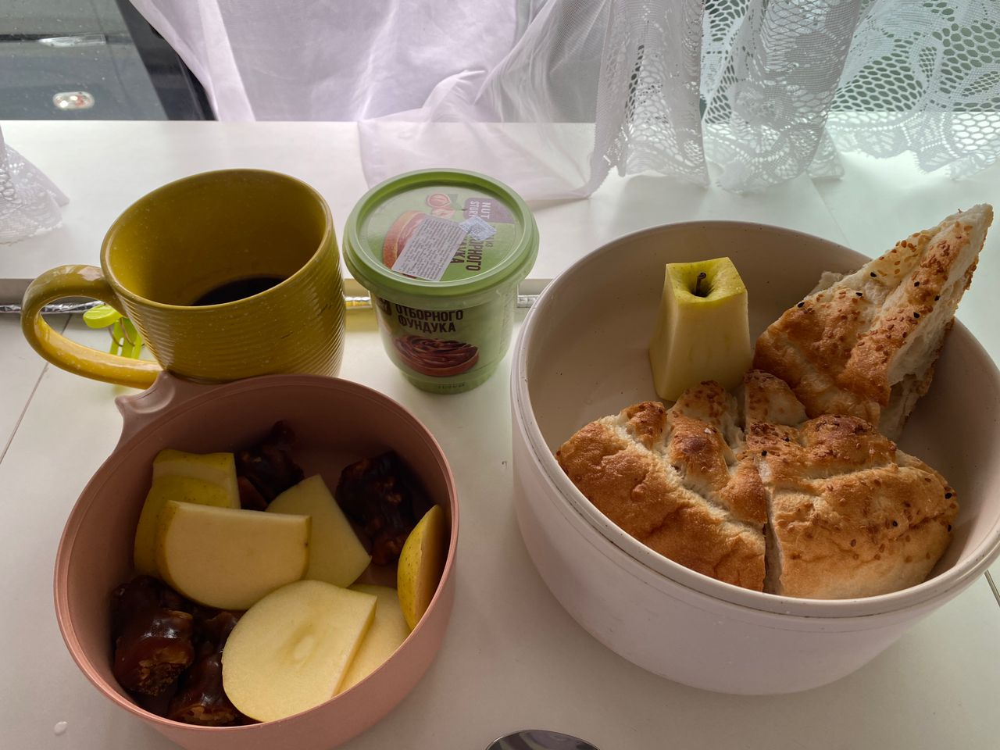
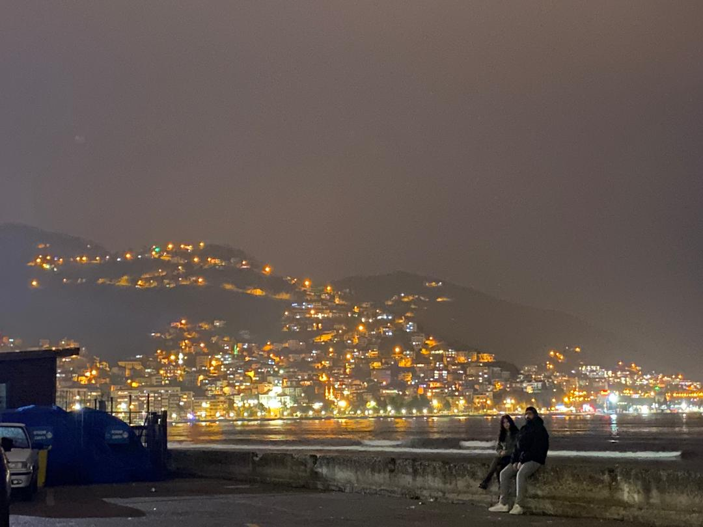
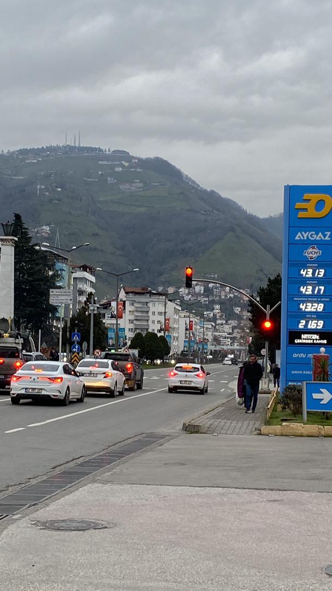
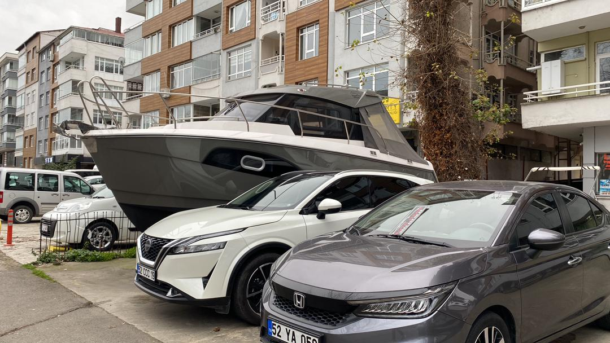
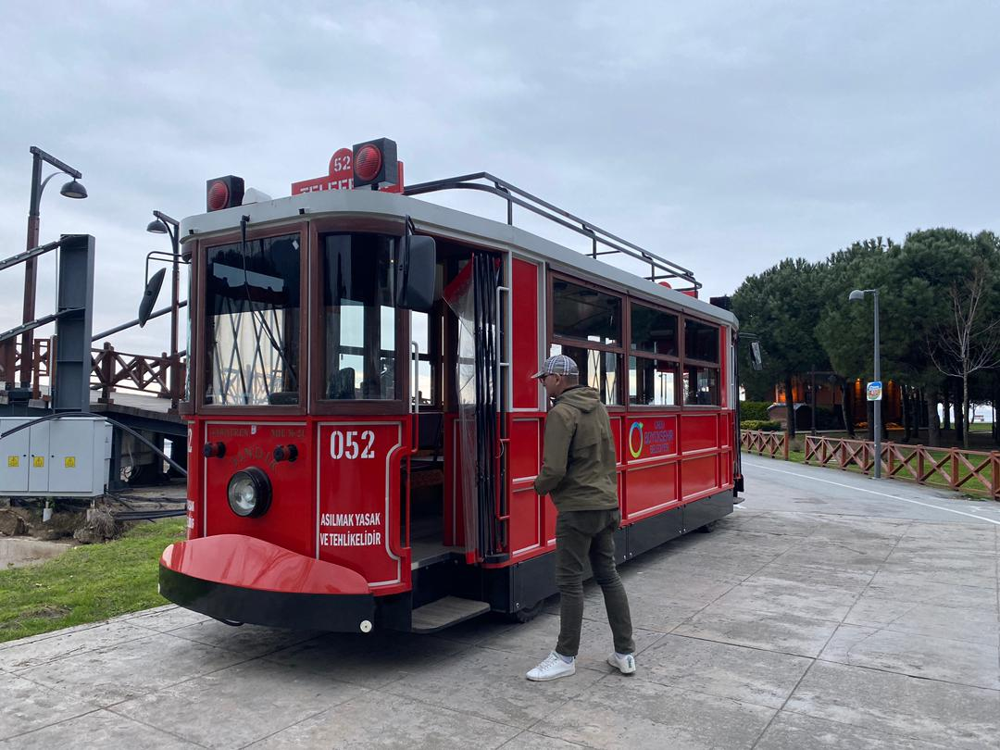
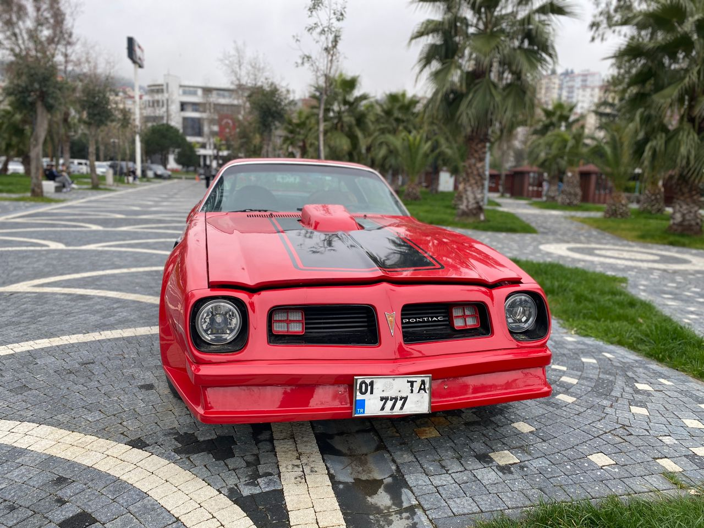
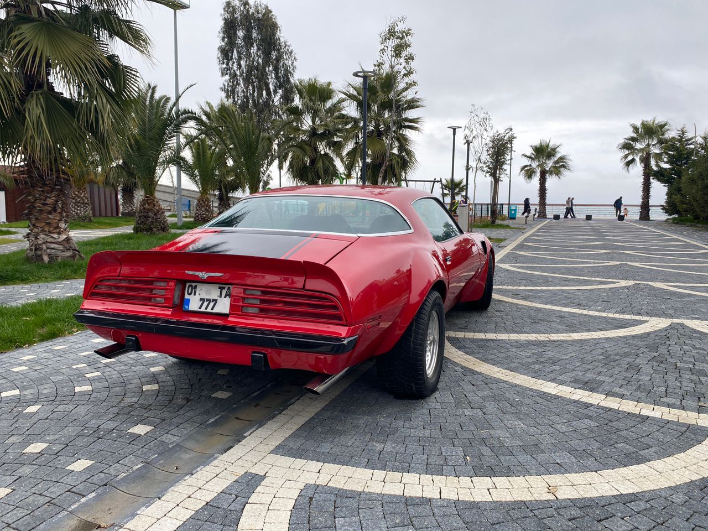
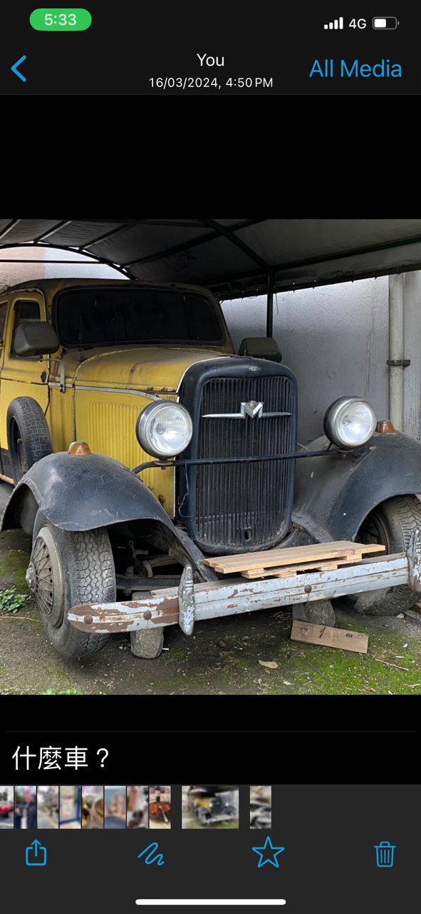
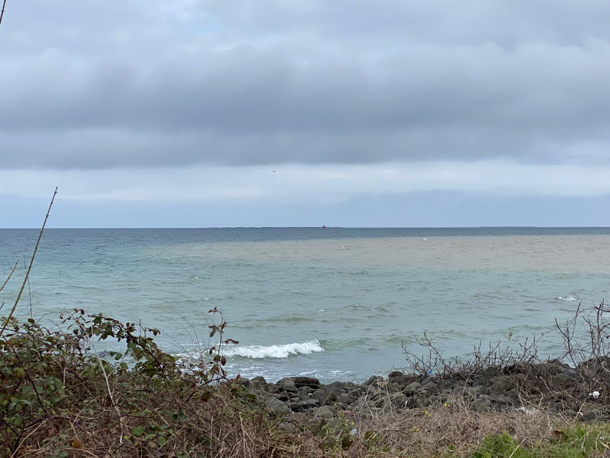

Real Story · 中文
Ramadan 的路上，很多店关了，但人没有关起来。
2024 年 Turkey 的 Ramadan 从 12 March 开始。 我进入 Turkey 后，很快就发现一个现实问题：很多 shops 都关着， 要买食物没有平时那么容易。
幸好遇到两个小 teenager。 他们带我去买 grilled chicken 和 bread。 那一刻不是大事件，却是 road life 很真实的一种帮助： 当你不熟悉一个地方，当很多店不开，有人愿意带你去买到食物，就已经很珍贵。
在 video 里面，还有一只 three-legged dog。 它少了一条腿，可是它很开心地追着 pigeon 跑。 我没有觉得它可怜，反而觉得它很有生命力。
Akçaabat Breakfast
一份早餐，带着五个国家。
15 March，我 overnight at Akçaabat parking lot。 第二天的 breakfast 很简单，可是它其实带着一路走过的国家： coffee from Iran, walnut from Armenia, apple from Georgia, chocolate paste from Russia, and bread from Turkey.
这不是餐厅早餐。 这是 campervan 里面的旅程早餐。 每一样东西都从前一个国家、前一段路，慢慢来到这个早上。

Ordu
16 March 的 Ordu，有山、有海、有奇怪的车。
16 March，我 overnight at Ordu。 这个地方给我的印象很特别： 夜里的山坡灯光、靠海的城市、灰色天空下的路，还有一些很有 personality 的 local scenery。
我看到红色 tram、路边的 old vehicle、经典红色车， 甚至还有一艘 boat 停在城市建筑之间。 这些不是 tourist attraction 的感觉，而是路上突然看到、觉得“咦，这里很有意思”的片段。







The Black Sea Question
我弟弟问：黑海是什么颜色？
后来我弟弟 WhatsApp 我：“What is the color of the Black Sea?” 我看到这个问题觉得很好笑，也很真实。 因为名字叫 Black Sea，可是它不一定是黑色。
那一天，我看到的 Black Sea 是灰蓝色的。 天空阴阴的，海面有一点 silver、有一点 pale blue，也有一点 cloudy grey。 所以答案是：那天的 Black Sea，不是黑色。

English Memory Summary
Ramadan help, a five-country breakfast, and the colour of the Black Sea.
During Ramadan in Turkey, many shops were closed, but two teenagers helped Tuzi buy grilled chicken and bread. Nearby, a three-legged dog happily chased pigeons, turning what could have looked sad into a scene of lively resilience.
On 15 March, Tuzi overnighted at the Akçaabat parking lot. Her breakfast carried the journey across borders: coffee from Iran, walnut from Armenia, apple from Georgia, chocolate paste from Russia, and bread from Turkey.
On 16 March, she reached Ordu, where local scenery along the Black Sea road became a set of small visual fragments: hillside lights, coastal roads, a red tram, classic cars, and old vehicles. When her brother asked what colour the Black Sea was, the answer came from the cloudy coast itself: grey-blue, silver, and not black at all.
Heart Statement
有时候旅程的答案，不在地图上，而在一片海的颜色里。
Ramadan closed many shops, but not kindness. The Black Sea was not black that day — it was the colour of weather, distance, and a question from home.